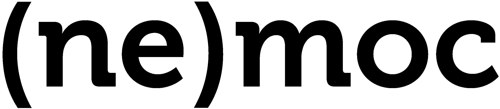

Přijde Vám, že se u Vás projevily příznaky akutní absence intelektuálního vyžití? Nenechejte nic náhodě a nechte se vyšetřit u nás na Gymnázium Jana Keplera od 16. do 18. 11. 2016 na letošním jubilejním 20. ročníku studentského Symposionu, přednáškového a diskusního fóra pořádaného u příležitosti Dne studentstva. Celou akci doplňují koncert, zábavné workshopy či filmová noc. Zvána je široká veřejnost, není třeba se nikde předem registrovat; vstup je zdarma.
Cílem Symposionu, zaměřeného každý rok na jiné téma, je zprostředkovat návštěvníkům setkání s významnými českými vědci, umělci a dalšími zajímavými osobnostmi, jejichž výčet naleznete v harmonogramu.
Rámcové téma pro Symposion 2016 zní:
Čistota, půl zdraví: Nemoc jako patologický jev, choroba postihující tělo, mysl či společnost a vychylující přirozenou rovnováhu věcí.
Sytý hladovému nevěří: Ne-moc jako absence moci. Ztráta vlády a kontroly nad tělem, identitou, osudem či systémem.
Čeho je moc, toho je příliš: Ne moc jako nepřebytek, umírněnost, minimalismus a zlatá střední cesta.
V rámci tohoto jubilejního Symposionu si také připomeneme, jak vypadaly předchozí dvě desítky let jeho existence.
Kromě tematických přednášek si pobyt v naší nemocnici můžete užít také v kavárně s drobným občerstvením, teplými nápoji a aktuálním tiskem. Disponujeme také šatnou na listopadové svršky a pro rodiče nabízíme dětský koutek s hlídáním a hračkami pro menší i větší. Všechny tyto služby můžete využívat denně do konce posledních přednášek. Celý program probíhá až do 23 hodin, poté musí všichni hosté školu opustit.
Pokud však cestujete z daleka, nabízíme i možnost noční hospitalizace. Cena je 100 Kč za osobu na noc, vlastní spacák nezbytný. Občerstvovat se můžete kromě kavárny také v nemocniční kantýně Scolarest, stravu na celý den objednáte za 120 Kč. Máte-li o jedno či druhé zájem, kontaktujte nás na e-mailu symposion@gjk.cz.
P. S.: Naše sanatorium se nachází v prostorách Gymnázia Jana Keplera. K ústavu jezdí záchranné tramvajové vozy č. 22 (zastávka Pohořelec) a 25 (zastávka Hládkov). Heliportem bohužel nedisponujeme, zato na rohu se nacházejí sochy bratří v plášti, Tycha de Brahe a Jana Keplera. S hledáním jednotlivých ordinací Vám, mimo našich šipek, pomohou také sestřičky na přijímacím oddělení.
P. P. S.: Pro informace o aktuálním dění nezapomeňte sledovat naši facebookovou stránku.
Mediální partneři